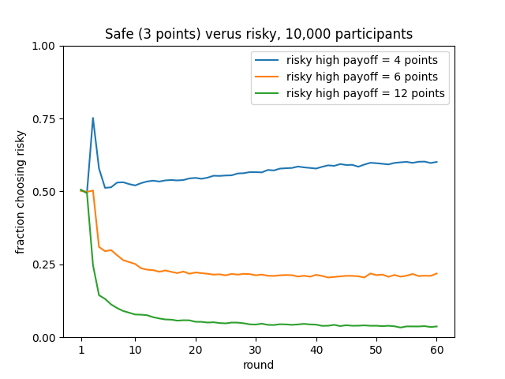

Binary choice example¶
Here is described a simple example of using PyIBL, in this case modeling a simple binary choice task. In this task the virtual participant is asked repeatedly to choose between two options, one safe and one risky, trying to learn from experience how to maximize the total points they earn. Choosing the safe option always earns three points, but choosing the risky option sometimes earns a fixed value greater than three, but others earns no points. There are three conditions to this experiment, each with that fixed, higher payout having a particular value. In all three conditions that higher payout and the probability of earning it are chosen so that the expected value of the choice is exactly three, the same as the safe choice. Thus, if given exact, descriptive knowledge of what will be earned a fully rational participant would know it doesn’t really matter which choice is made, but most actual humans do show a preference one way or another. The goal here is to see PyIBL mimic that behavior. Here are the rewards for the two options in the three different conditions, together with the probability of the high reward if the risky option is chosen:
condition |
safe |
risky low |
risky high |
probability of high |
|---|---|---|---|---|
4 |
3 points |
0 points |
4 points |
0.75 |
6 |
3 points |
0 points |
6 points |
0.5 |
12 |
3 points |
0 points |
12 points |
0.25 |
In this example each participant is asked to perform this task sixty times, learning what to expect over these sixty rounds. There are 10,000 virtual participants in each condition, each completely independent of one another. We plot, using the Python Matplotlib library, for each condition, the mean over the 10,000 participants of how often the risky choice was made at each round, displaying there preference of the virtual participants between the safe and risky options as it evolves with increased experience. Because running this model for 1.8 million choices (3 conditions × 60 rounds × 10,000 participants) typically requires several minutes we also display a progress indicator of how far along the model is, using the Python library tqdm.
After exploring this model, we also construct two slightly amended versions. The first shows how, in addition to displaying the plot of the frequency of choosing risky, to capture a CSV file of the details of each iteration for offline analysis. The second shows a way to take advantage of a multi-core machine to speed up the modeling by running model in multiple, concurrent processes.
Click here to download a zipped archive for the three versions of the code
of the binary choice example described here, along with a requirements.txt file. The recommended way of running these
examples yourself is to create and activate a virtual environment using venv or conda, doing pip install -r requirements.txt in
it, and then in it running Python on the desired model file.
Here is the initial version (available as binary_choice.py in the download, above), followed by a detailed description thereof:
1# Copyright 2024 Carnegie Mellon University
2# Binary choice example using PyIBL
3
4import matplotlib.pyplot as plt
5import numpy as np
6from pyibl import Agent
7from random import random
8from tqdm import tqdm
9
10HIGH_PAYOUTS = [4, 6, 12]
11SAFE_PAYOUT = 3
12PLOT_FILE = "binary-choice.png"
13ROUNDS = 60
14PARTICIPANTS = 10_000
15PREPOPULATED_MULTIPLIER = 1.2
16
17def run_condition(high_payout, progress):
18 results = []
19 high_probability = SAFE_PAYOUT / high_payout
20 for participant in range(PARTICIPANTS):
21 agent = Agent(default_utility=(PREPOPULATED_MULTIPLIER * high_payout))
22 round_results = [0] * ROUNDS
23 for round in range(ROUNDS):
24 choice = agent.choose(["safe", "risky"])
25 if choice == "safe":
26 payoff = SAFE_PAYOUT
27 elif random() < high_probability:
28 payoff = high_payout
29 else:
30 payoff = 0
31 agent.respond(payoff)
32 round_results[round] = int(choice == "risky")
33 results.append(round_results)
34 progress.update()
35 return results
36
37def main():
38 progress = tqdm(total=(len(HIGH_PAYOUTS) * PARTICIPANTS))
39 for payout in HIGH_PAYOUTS:
40 plt.plot(range(1, ROUNDS + 1),
41 np.mean(np.asarray(run_condition(payout, progress)), axis=0),
42 label=f"risky high payoff = {payout} points")
43 plt.xticks([1] + [10 * n for n in range(1, round((ROUNDS + 10) / 10))])
44 plt.ylim([0, 1])
45 plt.yticks([round(n / 4, 2) for n in range(5)])
46 plt.ylabel("fraction choosing risky")
47 plt.xlabel("round")
48 plt.legend()
49 plt.title(f"Safe ({SAFE_PAYOUT} points) versus risky, {PARTICIPANTS:,} participants")
50 plt.savefig(PLOT_FILE)
51
52if __name__ == '__main__':
53 main()
First (lines 4–8) are imported the various Python modules needed:
the PyIBL
Agentclassthe
random()method of the Python random module, which will be used for resolving the gamble implicit in the risky optionthe NumPy Python library which will be used for averaging results for plotting
the pyplot interface to Matplotlib
the tqdm module
Next (lines 10–15) are defined various constants used by the model. HIGH_PAYOUTS is a list of the three
possible high results of the risky gamble, these values also serving as the names of the three conditions.
Also define here is the reward of the safe option, the file in which to save the resulting plot, the number
of rounds and virtual participants, and a factor used in computing the utilities of options that have not
yet been seen, as described below.
The model per se is defined in the run_condition() function on lines 17–35. The condition is specified by
its first argument, and a tqdm object is passed in as its second argument, to be updated each time a participant’s
choices are concluded. The results of every choice for each participant, encoded as 0 for safe and 1 for risky,
are accumulated into the results local variable, each participant’s results appearing in a separate sub-list.
The probability of a high reward from the risky option is computed from the values of that reward and the safe one
so as to ensure the expected value of the risky option’s reward is the same as the safe reward.
After these preliminaries each participant is looped over.
An Agent is allocated for the participant. The default_utility of this agent is set to a value
slightly above the maximum possible reward of an actual choice to ensure random exploration of both options; once
the results of any real experiences of the options have been experienced by this participant the default_utility is
ignored. The sub-list to accumulate this participant’s results is allocated on line 22; each value is initialized
to None, but will be updated a few lines below.
Now, for this participant, the sixty rounds are played. First (line 24) a choice is made between safe or risky.
Then (lines 23–30) the reward for this choice is computed. On line 31 the Agent is told the value of this
reward, and on line 32 it is recorded as a zero or one for subsequent reporting.
Once all sixty rounds have been played the sub-list recording this participant’s choices is appended to the list of the entire condition’s results. Then the progress indicator is updated to note that this participants activities have finished, and the next participant’s choices commence. After all the participants have finished running the total results, a list of lists, is returned.
The main() finction (lines 37–51) first allocates a tqdm progress indicator. It then loops over the three
conditions (line 39) calling run_condition() for each and passing in the progress indicator (line 41), and
uses NumPy to compute the means across participants of the results of each round’s results, each mean being a
number between zero and one since the individual results are all zeros and ones (also line 39). Lines 40–50
construct and save the resulting plot. Lines 52–53 are the usual Python module boilerplate for ensuring that
the main() function is called if the file is simply loaded as python binary-choice.py.
The resulting plot from one run of this model looks like the following. Note that other runs will differ slightly because the model is stochastic. However the differences will be subtle as most are averaged out wince we are running the model over a large number of participants.
From this plot we can see that when the high reward from the risky option is frequent (the 4 condition, at 75%) as experience accumulates it is slightly preferred. But when it is infrequent, but higher (the 6 and 12 conditions, at 50% and 25%, respectively) the safe option is preferred instead. The spike in the first few rounds for the 4 condition reflects that the high payout occurs frequently during the initial, random exploration, but it subsides after a few rounds of real experience have accumulated.
Adding a log file¶
When running models like this it is often desired not just to see the average results, but to see and perform analysis on the details of each choice for each participant. This is often easily facilitated by writing a CSV file of the results. This can be added using the Python csv module.
Here is one way to add this, also available as the file binary_choice_with-log.py in the download above.
1# Copyright 2024 Carnegie Mellon University
2# Binary choice example using PyIBL writing a log file
3
4import csv
5import matplotlib.pyplot as plt
6import numpy as np
7from pyibl import Agent
8from random import random
9from tqdm import tqdm
10
11HIGH_PAYOUTS = [4, 6, 12]
12SAFE_PAYOUT = 3
13PLOT_FILE = "binary-choice.png"
14LOG_FILE = "binary-choice-log.csv"
15ROUNDS = 60
16PARTICIPANTS = 10_000
17PREPOPULATED_MULTIPLIER = 1.2
18
19def run_condition(high_payout, log, progress):
20 results = []
21 high_probability = SAFE_PAYOUT / high_payout
22 for participant in range(PARTICIPANTS):
23 agent = Agent(default_utility=(PREPOPULATED_MULTIPLIER * high_payout))
24 round_results = [None] * ROUNDS
25 for round in range(ROUNDS):
26 choice = agent.choose(["safe", "risky"])
27 if choice == "safe":
28 payoff = SAFE_PAYOUT
29 elif random() < high_probability:
30 payoff = high_payout
31 else:
32 payoff = 0
33 agent.respond(payoff)
34 round_results[round] = int(choice == "risky")
35 log.writerow([high_payout, participant + 1, round + 1, SAFE_PAYOUT, high_payout, high_probability, choice, payoff])
36 results.append(round_results)
37 progress.update()
38 return results
39
40def main():
41 progress = tqdm(total=(len(HIGH_PAYOUTS) * PARTICIPANTS))
42 results = {}
43 with open(LOG_FILE, "w", newline="") as file:
44 writer = csv.writer(file)
45 # write the header of the CSV log file
46 writer.writerow("condition,participant,round,safe payout,risky high payout,risky high probability,choice,reward".split(","))
47 for payout in HIGH_PAYOUTS:
48 plt.plot(range(1, ROUNDS + 1),
49 np.mean(np.asarray(run_condition(payout, writer, progress)), axis=0),
50 label=f"risky high payoff = {payout} points")
51 plt.xticks([1] + [10 * n for n in range(1, round((ROUNDS + 10) / 10))])
52 plt.ylim([0, 1])
53 plt.yticks([round(n / 4, 2) for n in range(5)])
54 plt.ylabel("fraction choosing risky")
55 plt.xlabel("round")
56 plt.legend()
57 plt.title(f"Safe ({SAFE_PAYOUT} points) verus risky, {PARTICIPANTS:,} participants")
58 plt.savefig(PLOT_FILE)
59
60if __name__ == '__main__':
61 main()
On line 4 we import the csv module. One lines 43-44 we open the desired CSV file to which to write the details,
and allocate a csv.writer object to correctly format the results. One line 46 we write the initial header
row of the CSV file; the file will describe eight columns, the condition, participant and round, together with details of the various
gambles, and finally the actual choice made by the model for that participant and round together with the resulting actual reward.
On line 35 we write the row corresponding to a single choice being made. While the model counts rounds and participants starting
from zero, it is often preferred to count them starting from one, so we add one to them when writing them here.
Everything else in this revised model is the same as in the original one.
The resulting binary-choice-log.csv file consists of nearly two million lines,
and is about 43 megabytes.
Here are its first few and last few lines; if you run it yourself the results will be similar
but slightly different because the model is stochastic:
condition,participant,round,safe payout,risky high payout,risky high probability,choice,reward
4,1,1,3,4,0.75,risky,4
4,1,2,3,4,0.75,safe,3
4,1,3,3,4,0.75,risky,0
4,1,4,3,4,0.75,safe,3
4,1,5,3,4,0.75,safe,3
4,1,6,3,4,0.75,risky,4
4,1,7,3,4,0.75,risky,0
4,1,8,3,4,0.75,safe,3
4,1,9,3,4,0.75,safe,3
...
12,10000,54,3,12,0.25,safe,3
12,10000,55,3,12,0.25,safe,3
12,10000,56,3,12,0.25,risky,0
12,10000,57,3,12,0.25,safe,3
12,10000,58,3,12,0.25,safe,3
12,10000,59,3,12,0.25,safe,3
12,10000,60,3,12,0.25,safe,3
Using multiple processes¶
As noted above this model typically requires several minutes to run. If you have a multi-core machine available you can often speed up models such as this, which involve multiple, independent virtual participants by partitioning the participants across multiple, concurrent processes.
This example does that, and the code is also available as multiple_processes.py in
the download above.
1# Copyright 2024 Carnegie Mellon University
2# Binary choice example using PyIBL and multiple processes
3
4from alhazen import IteratedExperiment
5import matplotlib.pyplot as plt
6import numpy as np
7from pyibl import Agent
8from random import random
9
10HIGH_PAYOUTS = [4, 6, 12]
11SAFE_PAYOUT = 3
12PLOT_FILE = "binary-choice.png"
13ROUNDS = 60
14PARTICIPANTS = 10_000
15PREPOPULATED_MULTIPLIER = 1.2
16PROCESSES = 0
17
18class BinaryChoice(IteratedExperiment):
19
20 def prepare_condition(self, condition, context):
21 context["high-probability"] = SAFE_PAYOUT / condition
22
23 def run_participant_prepare(self, participant, condition, context):
24 self.agent = Agent(default_utility=(PREPOPULATED_MULTIPLIER * condition))
25
26 def run_participant_run(self, round, participant, condition, context):
27 choice = self.agent.choose(["safe", "risky"])
28 if choice == "safe":
29 payoff = SAFE_PAYOUT
30 elif random() < context["high-probability"]:
31 payoff = condition
32 else:
33 payoff = 0
34 self.agent.respond(payoff)
35 return int(choice == "risky")
36
37def main():
38 exp = BinaryChoice(rounds=ROUNDS,
39 conditions=HIGH_PAYOUTS,
40 participants=PARTICIPANTS,
41 process_count=PROCESSES)
42 results = exp.run()
43 for condition in exp.conditions:
44 plt.plot(range(1, ROUNDS + 1), np.mean(np.asarray(results[condition]), axis=0),
45 label=f"risky high payoff = {condition} points")
46 plt.xticks([1] + [10 * n for n in range(1, round((ROUNDS + 10) / 10))])
47 plt.ylim([0, 1])
48 plt.yticks([round(n / 4, 2) for n in range(5)])
49 plt.ylabel("fraction choosing risky")
50 plt.xlabel("round")
51 plt.legend()
52 plt.title(f"Safe ({SAFE_PAYOUT} points) verus risky, {PARTICIPANTS:,} participants")
53 plt.savefig(PLOT_FILE)
54
55if __name__ == '__main__':
56 main()
To simplify the division across processes we use the Alhazen library which is intended for just this purpose.
Installation of Alhazen is included in the download’s requirements.txt, or it can be installed with pip install alhazen. We import it
on line 4 of the example. Because Alhazen can supply its own tqdm progress indicator we no longer have to import tqdm ourselves. On line 16 we
define a constant that will be used later to tell Alhazen how many parallel processes we’d like to run; setting it to zero tells Alhazen to use
its understanding of the host machines architecture to estimate what is the largest number it can run concurrently.
To use Alhazen we must subclass the Alhazen IteratedExperiment class (lines 18–35), and divide the work formerly in the run_condition() function
across the three IteratedExperiment methods prepare_condition(), run_participant_prepare() and run_participant_run(). We no
longer have to accumulate the results as Alhazen does that for us; instead run_participant_run() simply needs to return the result
of running its single round of a single participant in the relevant condition.
In the main() function on lines 38–41 we allocate an instance of our subclass, passing in the conditions, numbers of rounds and participants, and desired
number of concurrent preocesses. On line 42 we call this instance’s run() method, which returns a dictionary mapping each condition
name to a list of lists just like those run_condition() did in our original implementation. On lines 43–53 we pick apart this dictionary and use
it to create a plot just as we did earlier.
On a machine in the DDMLab, a System76 Thelio Major with a 2.2 GHz AMD Ryzen 3990X 64-core CPU, running the original model requires a little over four minutes.
But running this multi-process model using all 64 cores in parallel requires only six seconds. More modest improvements can be seen in more common
processors with fewer cores; we can approximate the improvements possible on such machines by running the multi-process model on this same machine but setting
the PROCESSES constant to values less than 64. Here are results for some values. Note that if run again these times might change slightly,
as they are sensitive to many aspects of the machine’s operation and status, but they largely reflect a nearly linear improvement in execution time
with increasing core use; that this linear trend tails off at the fastest times reflects that less time is being spend running the model, so the total time
more reflects the constant time required to render the plot, which is not aided by multiple processes.
Number of processes |
Time required (minutes:seconds) |
|---|---|
1 |
4:04 |
2 |
2:05 |
4 |
1:02 |
8 |
0:32 |
16 |
0:16 |
32 |
0:09 |
64 |
0:06 |